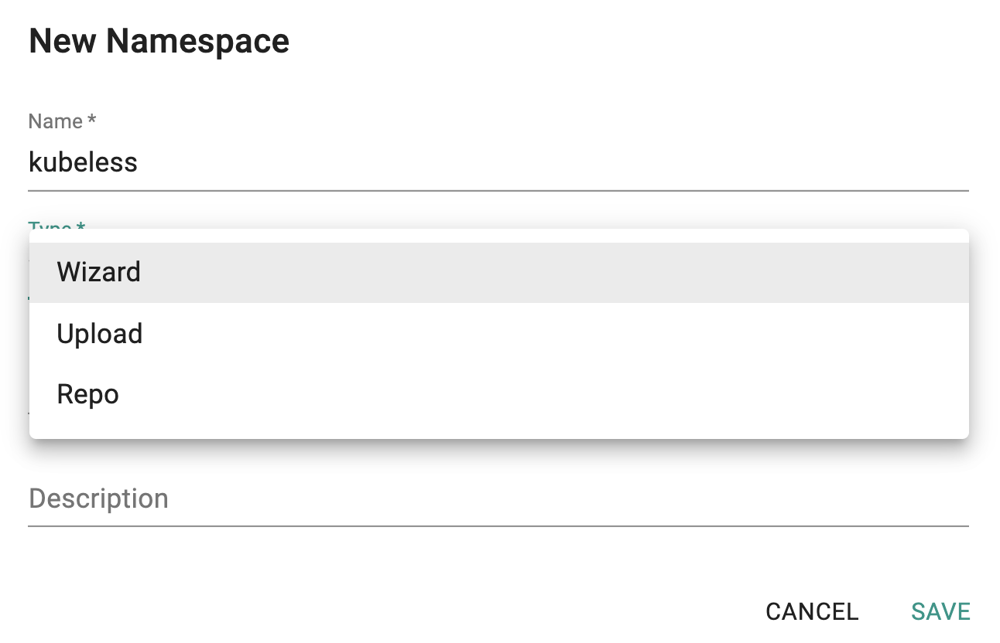
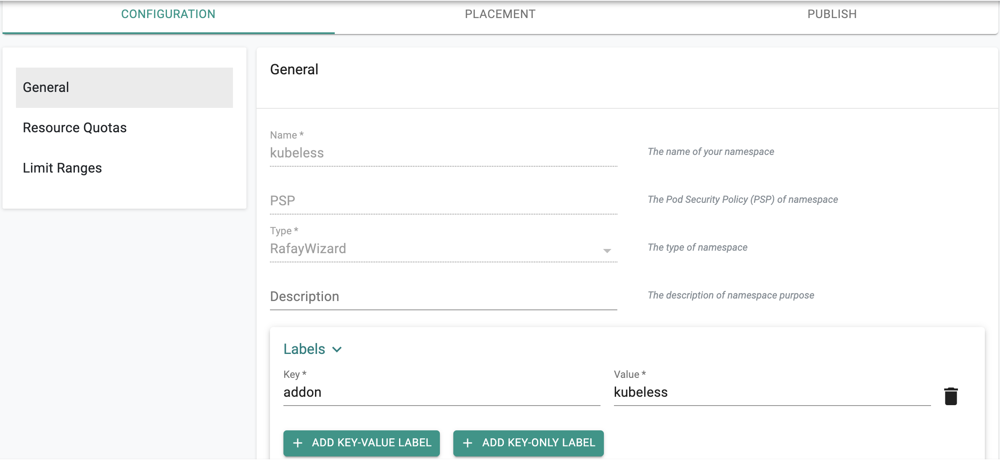
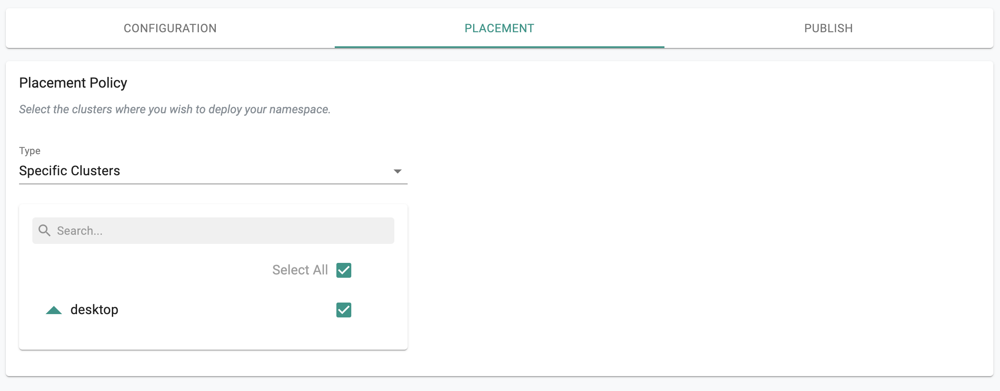
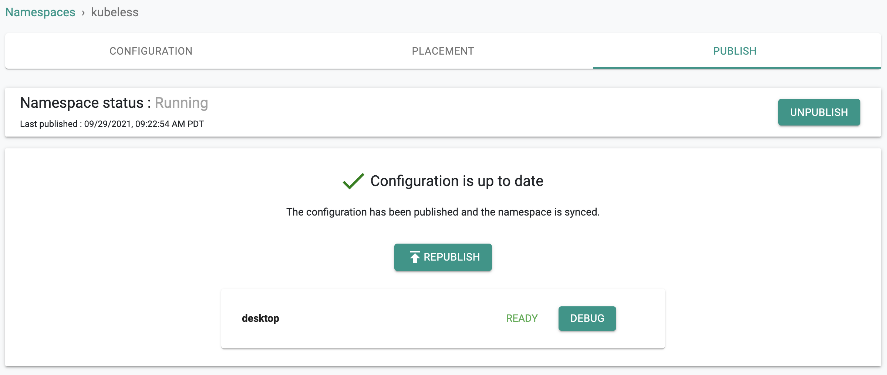

This is Part 4 of a multi-part, self paced exercise.
In this part, you will
Estimated Time
Estimated time burden for this part is 10 minutes.

!!! Note In addition to the Namespace wizard, users can also provide the k8s YAML spec for the namespace either by uploading it or point the controller to a Git repo where it can retrieve it.
You will be presented with an intuitive wizard that you can use to configure your namespace’s requirements. In our case, we want to add labels to our namespace.
In the example below, we have entered “key=addon” and “value=kubeless”

Since we only have one cluster in our project for this exercise, we cannot perform multi cluster operations.

Click on Publish. In a few seconds, the configured namespace will be deployed on the target clusters. Note that the target clusters can be in completely separate security domains and the controller can still manage namespace lifecyle remotely.

Optionally, you can verify what the published namespace looks like on your cluster.
In the example below, you can see that the “kubeless” namespace was created on the cluster a few seconds back when we published it.
kubectl get ns
NAME STATUS AGE
default Active 40h
kube-node-lease Active 40h
kube-public Active 40h
kube-system Active 40h
kubeless Active 34s
rafay-infra Active 13h
rafay-system Active 16hYou can also look deeper into the namespace by describing it. Notice that the the “custom label” we specified is part of the namespace.
kubectl describe ns kubeless
Name: kubeless
Labels: addon=kubeless
app.kubernetes.io/managed-by=Helm
kubernetes.io/metadata.name=kubeless
name=kubeless
rafay.dev/auxiliary=true
rafay.dev/component=namespace
rafay.dev/global=true
rafay.dev/name=namespace
rep-cluster=k5zpglk
rep-cluster-name=desktop
rep-drift-reconcillation=disabled
rep-organization=lk5od2e
rep-partner=rx28oml
rep-placement=mx6ox7m
rep-project=kgxy58m
rep-project-name=desktop
rep-system-managed=true
rep-workload=namespace-kj351lm-kubeless
rep-workloadid=qkoz7nm
Annotations: meta.helm.sh/release-name: namespace-kj351lm-kubeless
meta.helm.sh/release-namespace: kubeless
rafay.dev/resource-hash: efbeb365597980119ab784ad5eba8d1baf2d8c7cb8b78605d1020974c118de5f
rep-drift-action: deny
Status: Active
No resource quota.
No LimitRange resource.Congratulations! At this point, you have successfully configured and published a namespace to your Kubernetes cluster. You also verified the namespace’s specification directly on the cluster using Kubectl.